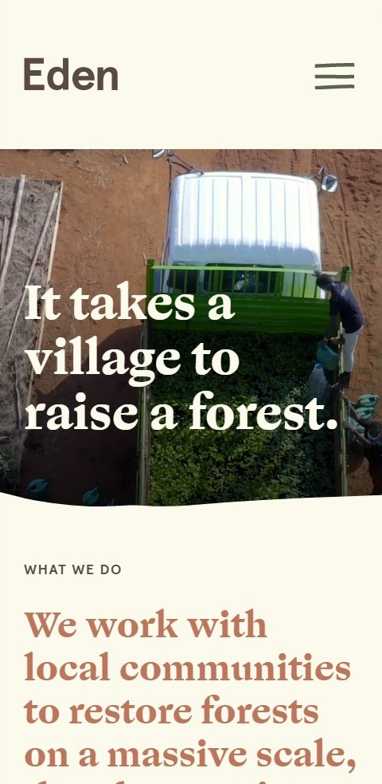
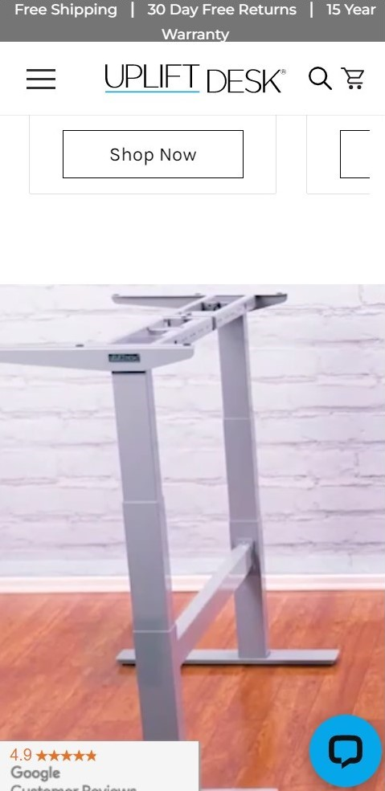

Fitts Law
Eden Reforestation Projects
I feel that edenprojects.org exemplifies the principle of Fotts Law. According to interaction-design.org, Fitts law states, "the amount of time required for a person to move a pointer (e.g., mouse cursor) to a target area is a function of the distance to the target divided by the size of the target. Thus, the longer the distance and the smaller the target’s size, the longer it takes." When looking at edenprojects.org, there is a lot of information found on the website. For example, the website is quite long and one must take a few moments to scroll to the bottom. Additionally, there are several places located on the website that one can click to go to another page for more information. All in all, the page isn't bad- there's just a lot of scrolling and clicking to be done to read everything the webpage offers.
Alignment
Uplift Desk
I feel that upliftdesk.com exemplifies the principle of alignment. The webpage is organized into several divisions from new arrivals to popular desk configurations. Each division is centered with user friendly photographs to assist viewers/buyers as they look at what uplift desk has to offer.
Repetition
Barossa Fine Foods
I feel that barossafinefoods.com exemplifies the principle of repetition. The website, barossafinefoods.com, is simple and straighforward. For example, the website utilizes only a few banners to help users navigate their website.